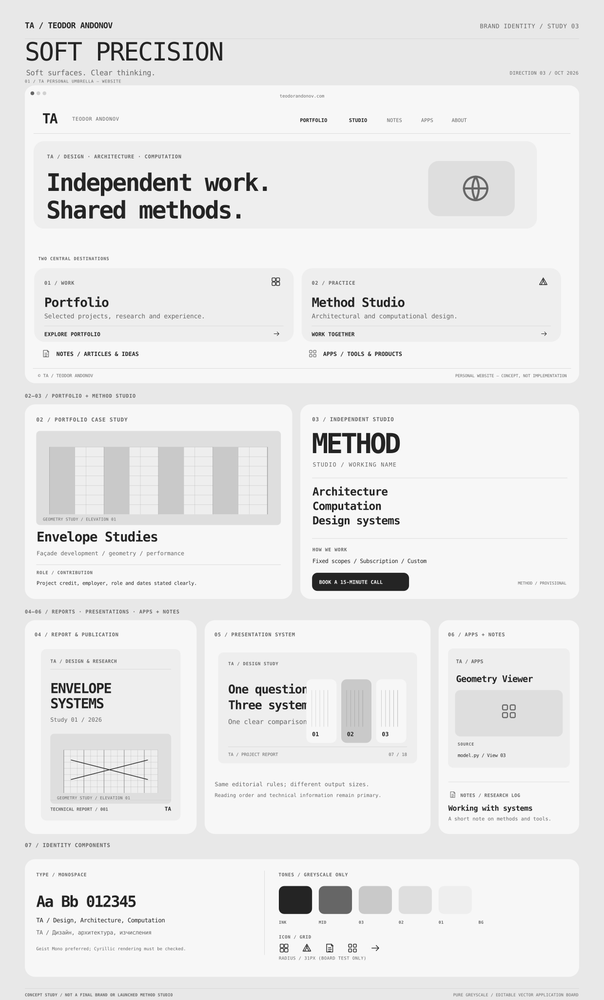
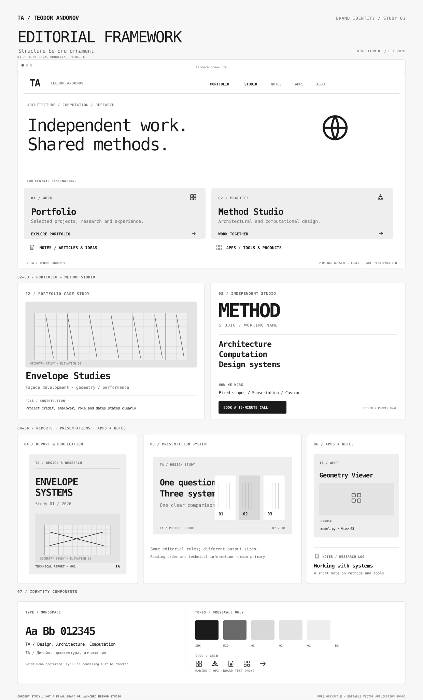
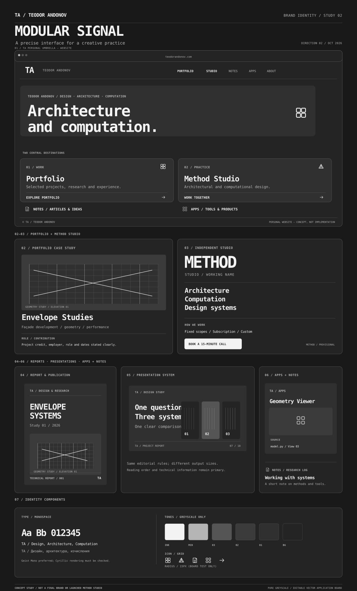

TA is the personal umbrella. Portfolio and Studio have equal visibility; Notes and Apps remain independent sections.
TA / Teodor Andonov — personal umbrella
One identity.
Many expressions.
Three grayscale directions, applied to the same family of work: personal portfolio, provisional Method Studio, notes, digital tools, reports and presentations. These are comparative design studies, not final logo or launched business assets.
True grayscale, restrained icons, editorial typography, clear component rules, varied corner radii.
Direction 03 is the preferred starting point. Method / Studio Method is a provisional name. Final mark and image families remain open.
01 / Inspect the full board
1800 × 2975 · editable SVG

Open full-size vector board ↗Read comparison criteria ↗Tip: open the SVG directly to zoom in. No extra libraries or build step needed.
02 / Compare all directions
Same content across every study

01 / Editorial Framework ↗Architectural publication, white space and restrained rules.

02 / Modular Signal ↗Dark grayscale, strong hierarchy and computational vocabulary.
Soft rounded cards, neutral fields and crisp mono typography.